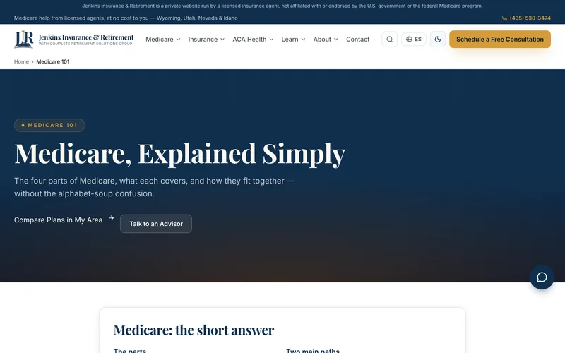

Information Systems · Applied AI · Provo, Utah
Business problems, built into working software.
I’m Jordan Jenkins, an Information Systems student at Utah Valley University and a licensed insurance agent in Utah and Wyoming. Below are projects, from a live 1,900-page website to an AWS data pipeline, each with why I built it and what I learned.

Featured: jenkinsir.com, live with about 1,900 pages in English and Spanish →The work
Choose a project to see what it looks like, why I built it, what I learned, and where it falls short.
About
I’m studying Information Systems with an Applied AI emphasis at Utah Valley University (expected 2028), and I’m a licensed insurance agent in Utah and Wyoming. That mix shapes how I build: start from a real business problem, protect people’s data, and be honest about limits.
I build with AI coding tools, mainly Claude Code. I write the requirements, make the design and compliance calls, and check the work with automated tests before anything ships. Every project here lists its limits, because knowing what doesn’t work yet is part of the job.
- Location
- Provo, Utah
- Languages
- English and Spanish
- Learning now
- SQL, Git, and the Claude API
- Certifications
- Anthropic: Claude Code in Action, AI Fluency and more · AHIP Medicare training
Let’s talk
I’m looking for internships in information systems, data analytics and applied AI. Email is the fastest way to reach me.